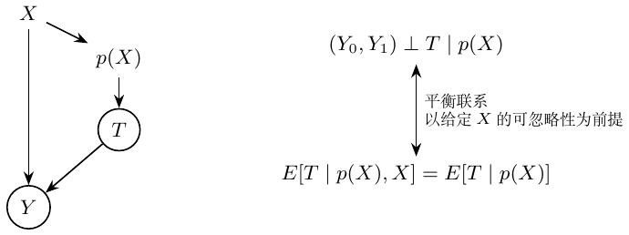

第11章：倾向得分
处理混杂偏差的另一种办法是倾向得分 \(p(X)=P(T=1\mid X)\)。图中连接 \(X\to p(X)\to T\to Y\)，并有 \(X\to Y\)。二元处理的平衡恒等式为 \[E[T\mid p(X),X]=E[T\mid p(X)].\] 若 \((Y_0,Y_1)\perp T\mid X\)，这个平衡性质使调整可缩减到 \(p(X)\)：\((Y_0,Y_1)\perp T\mid p(X)\)。识别两个处理状态的均值还需 \(0<p(X)<1\) 的重叠性。
我的例子。 两个人，一个已处理，一个未处理。若接受处理的概率相同，即使他们的 \(X\) 不同，可在这一得分组内比较；这里平衡的是分布，并非保证这一对个体的潜在结果相同。 \[\begin{aligned} E[T\mid p(X),X]&=E[T\mid X]=p(X), &&\text{因为 }p(X)\text{ 是 }X\text{ 的函数},\\ E[T\mid p(X)]&=E[E[T\mid p(X),X]\mid p(X)]\\ &=E[p(X)\mid p(X)]=p(X). \end{aligned}\]
逆倾向加权（IPW）。
条件差异可以改写为 \[\begin{aligned} E[Y\mid X,T=1]-E[Y\mid X,T=0] ={}&p(X)E\!\left[\frac{Y}{p(X)}\,\middle|\,X,T=1\right]\\ &-\{1-p(X)\}E\!\left[\frac{Y}{1-p(X)}\,\middle|\,X,T=0\right]. \end{aligned}\] ?我的理解。 我们观测到个体 \(i\) 接受了处理，但 \(i\) 接受处理的概率只有由 \(X\) 决定的 \(p(X_i)\)。给每个观测到的处理个体乘上 \(1/p(X_i)\) 来修正。若 \(p(X_i)\) 很小，该观测在未加权的结果分布中占比不足，就用概率倒数提高其代表性。\(T=1\) 和 \(T=0\) 的权重分别为 \(1/p(X)\) 与 \(1/(1-p(X))\)。这样重建“人人都处理”的总体（\(Y_1\)）和“人人都不处理”的总体（\(Y_0\)），两者之差就是 ATE。
结果的加权离散程度为 \[\hat\sigma_w^2=\frac{\sum_{i=1}^n w_i(Y_i-\hat\mu)^2}{\sum_{i=1}^n w_i}.\] 但倾向得分估计 \(\hat p(X)\) 本身也有误差。随意加入并非混杂因素的协变量，可能使倾向得分估计变得非常不稳定。已处理者估计出的处理概率可能高于未处理者。我的提醒是：权重很大，例如超过二十，会增大方差；二十是实践提醒，并非通用阈值。上面的加权离散程度不是 IPW ATE 估计量的抽样方差。
倾向得分匹配。
用 \(p(X)\) 替代原本的匹配距离。我在这里的担心是：这是否真正改善因果比较？处理预测更准确，不一定使因果估计更好，反而可能增加方差。处理组与未处理组的倾向得分分布若缺乏重叠，匹配就会有问题。

倾向得分调整：在所述假设下联系平衡与条件可交换性。